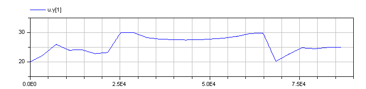
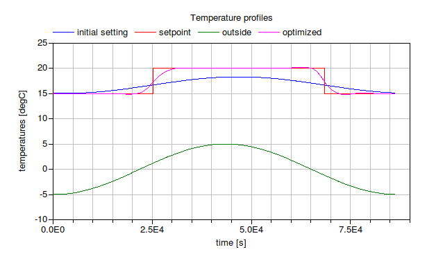

This directory contains example files that illustrate the use of GenOpt in conjunction with the Modelica modeling and simulation environment Dymola. To run the example files, a license of Dymola is required, which may be obtained from Dynasim.
Prior to running the optimization, you may have to start
Dymola, open the file ObjectiveFunction.mo translate and simulate
the model. This should generate the files
dymosim.exe (or dymosim on Linux),
dsin.txt and other
files that are not needed to run the example.
The model needs to be simulated once, as this adds the final time
of the simulation (which is stored in ObjectiveFunction.mo) to the
file dsin.txt.
The files dymosim.exe (or dymosim on Linux)
and dsin.txt need
to be in the same directory as the file
ObjectiveFunction.mo. If they are written to a different directory,
then you will need to change the working directory of Dymola.
This may be done from the Dymola simulation window by typing
cd("path"); where path need to be replaced
by the name of the path that contains the file ObjectiveFunction.mo.
To learn how to run the optimization, see the GenOpt manual and the GenOpt readme file.
During the optimization, GenOpt will use the template file
modelicaScheduleTemplate.txt to write the file
modelicaSchedule.txt.
This file contains the values of the independent parameters and will
be read by dymosim.exe during the simulation.
At the end of the simulation,
GenOpt will scan the file dslog.txt for
possible errors that may have occurred during the simulation.
If there were no errors, GenOpt will read the file
result.txt to obtain the objective function value.
This file has been written by dymosim.exe.
If the file dslog.txt contains error messages,
then GenOpt will stop.
The optimization should fine a control sequence that looks as follows:

This should yield the following temperature trajectory:

For further information, please consult the GenOpt manual and the Dymola manual.